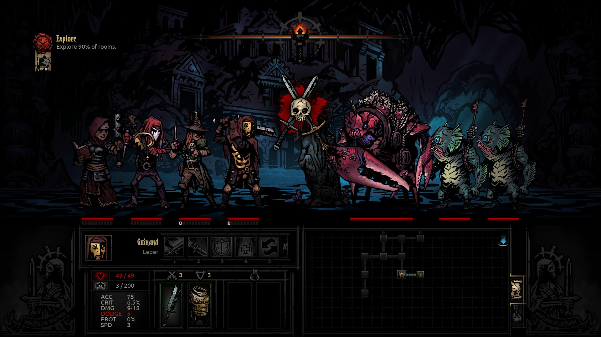
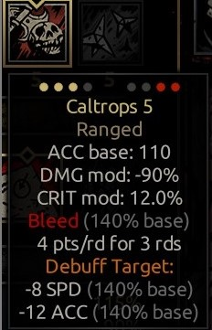
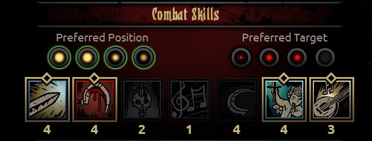

Lupta
Când intri într-un dungeon, vei întâmpina lupte ori pe coridoare, ori în camere și, bineînțeles, va trebui să câștigi aproape toate luptele peste care dai pentru a trece mai departe. Totuși, nu vei putea câștiga toate luptele, iar pentru asta există butonul de retreat (în colțul din stânga sus). Mereu ai opțiunea de a da te retrage și uneori e mai bine să renunți la o luptă dacă te afli într-o situație mult prea dificilă decât să riști să pierzi eroi și trinket-uri. Odată ce un erou moare, nu mai ai ocazia să-l recuperezi. Cu toate acestea, cel mai bine e să te retragi doar dacă lupta amenință să te lase cu pagube foarte mari (spre exemplu, mai mulți eroi au puțin HP și nu ai un healer stabil -ca Vestal- sau mai mulți eroi sunt foarte stresați), pentru că:
- Opțiunea de retreat poate eșua și chiar are șanse mai mari de a eșua dacă vreun erou are una din următoarele afflictions: Paranoid, Irrational, Masochistic, Hopeless, Rapturous (șansă de 33% că va refuza să se retragă), iar dacă aceasta eșuează, vei pierde tura, deci pui la risc șansa de a acționa a unui erou.
- Dacă un erou moare, poți recupera trinket-urile pe care le purta în acel moment dacă termini lupta. Același lucru nu se va întâmpla și dacă te retragi, deci vei pierde trinket-uri posibil valoroase.
Totuși, nu ar trebui să te afli prea des în nevoia de a te retrage. Un alt lucru de reținut este că, de cele mai multe ori când renunți la o luptă, vei fi nevoit să abandonezi misiunea complet.
Într-un dungeon vei intra cu un grup format din 4 eroi. Pozițiile lor sunt numerotate de la 1 la 4 dinspre centru spre exterior (pozițiile inamicilor se numără la fel, în sens invers, dar ei nu vor fi mereu câte 4).
De reținutcă fiecare erou poate ocupa o singură poziție, în timp ce există inamici ce pot ocupa mai multe. Mărimea lor e dată de numărul de poziții ocupate.
Pozițiile contează pentru că atât abilitățile eroilor, cât și cele ale inamicilor, depind de poziția ocupată.
De exemplu, The Bone Courtier poate folosi Tempting Goblet doar din ultimele 3 poziții și Knife in the Dark doar din primele 2, deci clar e mai avantajos pentru tine dacă el se află în prima poziție.
Analizând descrierea unei abilități, poți vedea punctele galbene din stânga care înseamnă pozițiile pe care eroul trebuie să le ocupe pentru a putea folosi abilitatea respectivă și, de asemenea, punctele roșii din dreapta, care înseamnă pozițiile în care un inamic trebuie să se afle pentru a-l putea ataca. Unele abilități conferă posibilitatea atacării mai multor inamici în același timp.
De asemenea, în fișa unui erou se poate vedea poziția optimă de ocupat în funcție de abilitățile alese.
Fiecare erou are o acțiune pe rundă, deși există inamici (-boss) care pot acționa de mai multe ori pe rundă (maxim 3). Aceste acțiuni sunt marcate prin linia (liniile) de lângă bara de HP.
Ordinea în care o unitate acționează este dată de SPD-ul (viteza) fiecăruia. Fiecare unitate are o valoare a SPD-ului la bază (care poate fi influențată prin trinket-uri, afflictions și quirks, buff-uri sau debuff-uri). La începutul fiecărei runde se presupune că fiecare unitate aruncă un zar cu 8 fețe. Valoarea obținută prin aruncarea zarului se adaugă SPD-ului inițial, apoi fiecare unitate acționează în ordinea descrescătoare a valorilor obținute în final. Astfel, cu cât un erou are SPD-ul mai mare, cu atât este mai probabil că el va acționa primul; dar doar dacă o unitate are cu 8 SPD mai mult decât alta se știe sigur că va acționa înaintea acesteia.
De reținut că dacă folosești buff-uri pentru a mări SPD-ul unui erou, acesta se va aplica abia începând cu următoarea rundă.
O rundă se încheie după ce fiecare unitate a acționat, apoi începe o alta, aruncându-se iar zarul și resetându-se ordinea. Ceea ce contează despre runde este că dacă mai sunt cel puțin 2 inamici rămași (sau cel puțin un inamic de mărime 2), poți prelungi lupta oricât de mult vrei. Dar dacă este rămas un singur inamic, la 2 runde după ce ultimul inamic a murit, acesta va chema întăriri (vor apărea noi inamici), exceptând cazul în care acesta are aplicat asupra lui bleed sau blight ce urmează să-l omoare în ultima rundă.
Dar dacă există cel puțin 2 inamici, poți folosi acest lucru în avantajul tău prin metoda numită stalling: omori cei mai amenințători inamici (de obicei aflați pe ultimele 2 poziții), lași 2 în viață și prelungești lupta, ținând inamicii sub stun în continuu pentru a le preveni atacurile (de asta e important să ai un stunner în echipă), în timp ce tu folosești aceste runde pentru a-ți vindeca eroii și a reduce stresul.
Alt lucru important într-o luptă sunt cadavrele. Când un inamic (nu și cei boss) moare, lasă în urma sa un cadavru (această opțiune poate fi scoasă de la setări, dar nu și în modul Stygian). Un cadavru ocupă poziții în funcție de marimea inamicului, are mai puțin HP decât acesta, are rezistență foarte mare la stun (nu că ai vrea vreodată să dai stun unui cadavru), nu are protecție și nu atacă. Motivul principal pentru care există cadavre e să te încurce în țintirea inamicilor. Ele pot fi distruse prin atacarea directă sau prin folosirea abilităților ce anulează cadavrele; ele dispar dupa 3 runde.
De reținut că un inamic care moare de la bleed sau blight nu lasă în urmă cadavru. Eroii nu lasă cadavre, indiferent de moarte.
Rolurile în echipă
O echipă de 4 eroi poate consta în orice, dar e important să știi să alcătuiești o echipă cu eroii pe care-i ai în roster în funție de misiunea pe care vrei s-o completezi. Așadar, pentru a-ți fi mai ușor să te orientezi, consideră 4 roluri majore în care se împart eroii:
- Damage dealer
- Stunner
- Healer
- Stress healer
Un damage dealer (cel care provoacă daunele cele mai mari) e important pentru că ai nevoie să-ți omori inamicii și nu-ți poți permite mereu luxul de a-ți aloca nenumărate runde. Nu-ți poți ține toți inamicii sub stun în continuu și nu-i poți lăsa să trăiască prea mult.
Un stunner (cel care poate face inamicii inactivi pentru o rundă) este important pentru că îți conferă mai mult control asupra inamicilor și-ți asigură posibilitatea stalling-ul. Având control asupra inamicilor, luptele nu vor mai fi haotice. Majoritatea luptelor n-ar trebui să te lase într-un stadiu mai prost decât cel în care te aflai înainte de a o începe, ci sunt oportunități de a obține diferite bunuri și de a-ți îmbunătăți stadiul, iar acest lucru nu se obține la întâmplare, ci controlându-ți inamicii. Desigur că bătăliile cu inamicii-boss vor fi mai dificile, dar acelea își au de obicei locul la finalul misiunii. În schimb, nu-ți poți permite să acumulezi prea mult stres și să pierzi HP continuu, cu fiecare luptă.
Healer-ul e esențial de avut într-o misiune. Toate acțiunile din timpul unei misiuni pot cauza pierderea HP-ului, de care un erou are nevoie pentru a rămâne în viață. În timpul unei lupte se pot întâmpla cele mai impredictibile lucruri, cum ar fi ca un inamic să te atace cu o lovitură criticală (sau mai multe la rând) și să aducă un erou la Death's Door (după ce își pierd tot HP-ul, spre deosebire de inamici -care mor imediat-, eroii vor intra în acest stadiu numit Death's Door, de unde orice lovitură îi poate omorî definitiv, dar de unde mai pot fi încă salvați prin heal). Chiar dacă aduci cu tine multă mâncare, aceasta nu poate fi folosită în timpul unei lupte, deci, pentru a preveni moartea eroilor -resurse scumpe-, este necesar să ai un healer, oricât de neînsemnat ar părea abilitatea lui de heal.
Abilitățile care pot vindeca stresul sunt ceva mai rare printre eroi. Acestea sunt: Inspiring Tune (Jester), Inspiring Cry (Crusader), Cry Havoc (Houndmaster), Withstand (Leper - doar asupra lui o poate folosi), Absolution (Abomination -doar asupra lui o poate folosi). O altă metodă de a vindeca stresul e prin uciderea inamicilor (fiecare ucidere provoacă -3 stres celui care dă lovitura finală, dar nu este valabil și dacă inamicul moare de la bleed sau blight) sau lovituri criticale (la fel, -3 stres atât celui care face acțiunea, dar există și posibilitatea ca și ceilalți eroi să beneficieze de aceasta). Așadar, chiar și eroii cu șansă mare la lovituri criticale sunt predispuși spre a vindeva echipa de stres.
De obicei, healer-ii și stress healer-ii vor fi pe ultimele 2 poziții.
Acuratețea
Șansa de a nimeri un inamic și se calculează astfel: la ACC-ul (acuratețea) unui erou, adaugă ACC-ul abilității pe care vrei s-o folosești și scade DODGE-ul inamicului. Valoarea obținută astfel este procentajul care dă șansa de a nimeri un inamic. Aceasta nu poate fi mai mare de 90%, deci buff-urile pentru ACC sunt bune, dar până la o limită. Nu este nevoie să exagerezi.
Bleed și Blight
Acestea sunt acele efecte ale unor abilități care, odată aplicate asupra unei unități, aceasta va suferi DMG de-a lungul mai multor runde. Ele pot fi aplicate de mai multe ori, adunându-se și fiind, astfel, foarte utile în luptele cu inamici cu protecție (PROT) mare, căci aceste efecte reprezintă true damage, adică ignoră această protecție.
Sunt foarte mulți eroi care au cel puțin o abilitate ce au una din aceste efecte, dar sunt niște eroi ce excelează în acest domeniu.
În ceea ce privește bleed-ul, cel mai bun este Flagellant: are 3 abilități care pot aplica bleed, iar DMG-ul aplicat pe rundă este cel mai mare din joc (dintre eroi), începând cu 3 și 4 DMG pe rundă. În plus, una dintre abilitățile lui, Rain of Sorrows poate ataca ambii inamici de pe ultimele poziții, care sunt cele mai importante. Un alt erou ce se apropie de Flagellant este Jester: are 2 abilități care pot aplica bleed, dar DMG-ul este ușor redus față de cel al Flagellant-ului. Și el are, de asemenea, o abilitate ce-i permite să atace ambii inamici din mijloc, Harvest.
Privind blight-ul, de departe cel mai bun erou este Plague Doctor: are 2 abilități ce pot aplica blight, începând cu 4 și 5 DMG pe rundă. În plus, Plague Grenade atacă ambii inamici de pe ultimele poziții.
Provizii pentru luptă
- Antivenom: anulează efectul de blight.
- Bandage: anulează efectul de bleed.
- Medicinal Herbs: anulează debuff-urile.
- Holy Water: oferă un buff de +33% rezistență la blight, bleed, debuff și disease (boli).
- Laudanum: anulează efectul de horror (efect care provoacă stres de-a lungul mai multor runde).
- Dog Treat: îl poate folosi doar Houndmaster și oferă un buff de +50% DMG și 15 ACC.
- The Blood: schimbă stadiile Crimson Curse-ului. Dacă îl dai unui erou în stadiul de carving, acesta va intra în faza Bloodlust: primește un buff de +4 SPD și +50% DMG, dar și 33 stres. Dacă îl dai unui erou în stadiul de wasting, va reveni la stadiul pasiv.
- Aegis Scale: oferă un scut ce blochează orice formă de DMG, dar bleed-ul și blight-ul încă pot fi aplicate. Se poate obține în timpul coșmarurilor pe care le are Shieldbreaker, omorând Pliskin, Rattler sau Adder. Poate fi păstrat și adus oricând în misiuni.
Câteva sfaturi generale despre provizii:
- Folosește Holy Water înainte de o luptă importantă.
- Păstrează Aegis Scale pentru inamici-boss; nu se obțin așa ușor.
- Dacă misiunea ta e să omori un inamic-boss, păstrează Dog Treat pentru acea luptă. Altfel, folosește-l cât mai rapid în misiune sau dă-l jos dacă ai nevoie de un loc liber în inventar.
- Nu da Blood unui erou care nu e infectat cu Crimson Curse, căci va primi îi va scădea 33% din HP-ul maxim, va primi un debuff de -8 SPD și -10 DODGE și, de asemenea, +20 stres.
- Unii eroi au abilități care pot anula efectele de bleed și blight, cum ar fi Plague Doctor (Battlefield Medicine), Hellion (Adrenalline Rush) sau Grave Robber(Toxin Trickery) , deci uneori te poți folosi de acestea pentru a nu consuma prea rapid antivenom-ul și bandage-ul.
- Medicinal Herbs nu anulează debuff-urile mortale (obținute în urma aducerii unui erou la Death's Door).